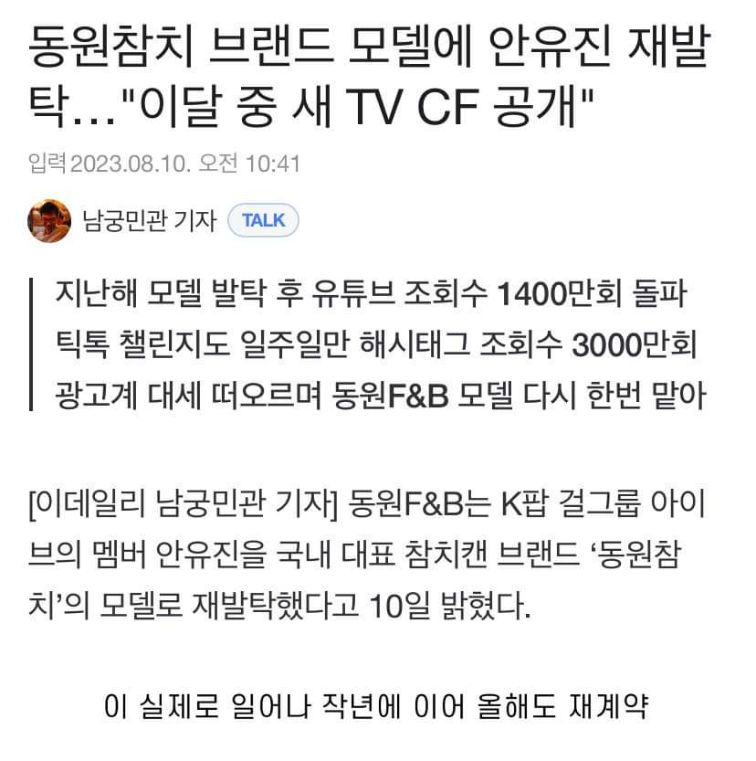

광고떔에 젓가락질도 고쳤는데 광고 줘야지
진짜 정석으로 한방에 고쳤더라
안유진이라하면 싫어한다 제목 유진이로 고쳐야함 ㅋㅋㅋㅋㅋ
우리가 유진이라 그러면 싫어해..
아!
안유진이
내가 일주일에 최소 5번은 참치캔으로 아침먹음
고구마 100그람에 참치캔인대 물에 담긴거있음
그거에 불닭소스 딱 6그람넣고 먹으면
살 절대 안찜 저녁 2000칼로리 먹지않는이상
저녁에 콰트로치즈와퍼 세트 까지는 괜츈???
부자네
참치캔 자주 먹지 말래
헉 왜?
비싸서!
중금속조심해라 영국여자에 매일참치먹다 ㅈ됨
참치가 상위포식자라 누적치가 큼
근데 보통 참치캔에 쓰는 참치는 가다랑어라 그렇게 까진 걱정 안 해도 된다함
캔먹음
내여자임
참기름참치는 뭐여
호주가니깐 식용유 넣은거 올리브유 넣은거 미네랄워터 넣은거 다양하던데
난 안유진이 레이랑 이서 놀릴때가 그렇게 재밌더라 ㅋㅋㅋㅋㅋ
똑똑해보이고 정신 건강해보이고 광고모델로 이미지 좋지
동원참치 비싼거 빼면 좋아
유진양? 침으로 곱소…
참치 무한 쿠폰이 진짜 존나 든든할거같다
ㄹㅇ 반찬걱정없겠다 ㅋㅋㅋㅋ
ㄹㅇ 김 간장 계란 삼신기에 참치 국물까지 다 털어넣으면 절대 안질림... 매콤한거 땡길때 고추참치... 귀찮을때는 그냥 참치캔 하나 까먹기
아이브 그래미 아시안팝 출품한거 트루???
이영지 다라이 살발하네 ㅋㅋ
내 아내임 ㅎㅎ
그래 당연히 맛보기 서비스도 좀 해주고 계약 끝나도 좋다고 해줘야 또 써주지. 광고 끝나면 아이폰으로 다 바꾸는 병신들은 사서 욕처먹잖아.
간장계란밥 할때 넣어먹으니 맛있긴하더라.
유진이
참기름참치 저거 맛은 있는데 먹다보면 달아서 느끼해
참치 쌈밥으로 먹으면 진짜 뒤짐
감당할수 있겠어!!??